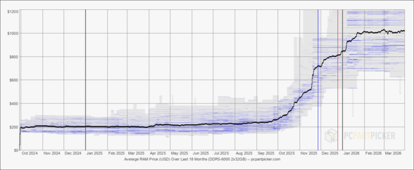

Actuellement en deuxième année de BTS SIO (option SLAM) au Lycée
Léonard de Vinci à Melun, j'ai effectué deux stages chez
D8 Espresso Excellence à Vitry-sur-Seine, qui
m'ont permis de travailler sur des projets concrets à fort impact
métier.
Mon stage de 2ème année m'a conduit à déployer une IA générative
locale connectée à une base Oracle 19c — un projet présenté et
validé devant la direction générale, avec un budget de près de 4
000 €.
2Stages en entreprise
4Projets documentés
6+Technologies maîtrisées
victor@portfolio:~$
$whoami
Victor Gomes Silva — Étudiant BTS SIO SLAM
$cat formation.txt
BTS SIO · SLAM · Lycée Léonard de Vinci · Melun
Diplôme prévu : Juin 2026
$ls ./langues/
portugais/ espagnol/ anglais/
$echo $PERMIS
Permis B
$█
Ma formation
BTS SIO
Qu'est-ce que le BTS SIO ?
Le
BTS SIO (Services Informatiques aux Organisations)
prépare les étudiants à travailler dans le domaine de l'informatique
au sein des organisations et des entreprises. Il comprend deux
options selon la spécialisation souhaitée :
Option SISR
Solutions d'Infrastructure, Systèmes et Réseaux
Cette option se concentre sur la gestion des infrastructures
informatiques, la mise en place et la maintenance des réseaux, la
sécurité des systèmes d'information et l'administration des
serveurs.
Métiers accessibles :
Technicien de productionTechnicien réseauAdministrateur systèmes et réseaux
Ma spécialité ✓
Option SLAM
Solutions Logicielles et Applications Métiers
Cette option se concentre sur le développement d'applications
informatiques, la programmation, la conception de bases de données
et la gestion de projets informatiques.
Métiers accessibles :
Technicien de productionProgrammeurAnalyste programmeurTechnicien d'études informatiquesInformaticien d'études
Chronologie
Mon Parcours
2021 – 2024
Formation
Baccalauréat STMG — Option SIG
Lycée Henri Becquerel — Nangis. Formation orientée gestion,
management et systèmes d'information — première
approche concrète des outils numériques et de l'organisation des
données en entreprise.
Systèmes d'informationGestionExcel
2024
Formation
Entrée en BTS SIO SLAM
Intégration au Lycée Léonard de Vinci — Melun.
Début de la spécialisation en développement logiciel, bases de
données et algorithmique.
PHPSQLKotlinHTML/CSS
Mai – Juin 2025
Stage 1ère année
D8 Espresso Excellence — Vitry-sur-Seine
Développement d'un outil de
reporting logistique SQL pour le suivi des
retards de ravitaillement des distributeurs automatiques.
Travail direct sur la base Oracle 19c (schéma VEGA).
Requête SQL Oracle anti-retard (+2j)
Modélisation schéma relationnel (Draw.io)
Mise à jour 6 000+ fiches clients (INSEE)
Intranet HTML/CSS — initiative zéro papier
Oracle SQLDraw.ioHTML/CSS
2025 – 2026
Formation
2ème année BTS SIO SLAM
Approfondissement en architecture logicielle, développement
mobile Kotlin, intégration d'IA et gestion de projets
informatiques. Préparation à l'examen final (Juin 2026).
Kotlin POOPythonDockerLLM / RAG
Jan. – Fév. 2026
Stage 2ème année · Phare
D8 Espresso Excellence — IA Générative On-Premise
Conception et déploiement d'un
assistant IA local connecté à la base Oracle
19c via un serveur MCP personnalisé — zéro connexion internet,
données 100% confidentielles. Projet présenté et validé devant
la direction générale avec un budget de ~4 000
€.
LLM local : LM Studio + llama 3.1 7B-Q4
Serveur MCP Python (transport SSE Raw ASGI)
Connexion Oracle via Docker + Thick Mode
Présentation DG → budget RTX 5060 Ti validé
PythonDockerOracle 19cMCP/SSEAnythingLLM
Juin 2026
À venir
Diplôme BTS SIO SLAM
Obtention du diplôme et ouverture vers une
alternance ou un emploi en développement
logiciel, intégration d'IA ou solutions d'entreprise.
Disponible Juin 2026
Réalisations
Projets
Stage 2ème année · 2026
IA Générative On-Premise
Déploiement d'un assistant IA local connecté à Oracle 19c via MCP
& Docker — sans aucune fuite de données vers internet.
PythonDockerLM StudioOracle 19cMCP/SSE
En savoir plus →
Stage 1ère année · 2025
Reporting Logistique SQL
Outil de suivi des retards de ravitaillement des distributeurs
automatiques, intégré dans le système VEGA.
Oracle SQLDraw.ioHTML/CSS
En savoir plus →
Projet scolaire
Suite Applicative Kotlin
De la logique algorithmique (Bataille Navale) à l'architecture POO
avancée (KotlinMonster).
KotlinPOOGit
Voir sur GitHub →
Projet scolaire
GeoWorld
Application de consultation de données géopolitiques avec filtrage
dynamique par continent en PHP/SQL.
PHPSQLHTML/CSS
Voir sur GitHub →
Projet scolaire · Dérivé KotlinMonster
Arkania
Application web RPG avec gestion complète des rôles (joueur /
admin), administration des monstres, objets et joueurs, et un jeu
de carte interactif.
PHPMySQLHTML/CSS/JSPOOMVC
Voir sur GitHub →
Stack technique
Mes compétences
Langages
SQL OracleAvancé
CTEsWindow functionsCONNECT BYOracle 19c
PythonIntermédiaire
ScriptsFastAPIoracledbMCP Server
KotlinIntermédiaire
Spring BootPOOThymeleafSpring Security
HTML / CSS / JSIntermédiaire
BootstrapResponsiveVanilla JS
PHPNotions
Scripts serveurIntranet D8
Base de données
Oracle 19c — schéma VEGA
MySQL / MariaDB
Modélisation ERD (Draw.io)
Oracle SQL Developer
IA locale (on-premise)
LM Studio · Llama 3.1 8B
AnythingLLM — RAG
MCP Server Python (SSE)
Prompt Engineering
Développement applicatif
Spring Boot + Spring Security
Architecture MVC
JPA / Hibernate
Kotlin POO
Infra & DevOps
Docker — conteneurisation
Git / GitHub Pages
Oracle Instant Client (Thick Mode)
Windows Server / Linux
Veille technologique
Qu'est-ce que la veille technologique ?
La veille technologique est un processus de collecte, d'analyse et
de diffusion d'informations sur les évolutions technologiques, les
tendances du marché et les innovations dans un domaine spécifique.
Elle permet aux professionnels de rester informés des dernières
avancées, d'anticiper les changements et de prendre des décisions
éclairées pour leurs projets et stratégies.
La crise mondiale de la RAM : quel impact sur le déploiement de
l'IA en entreprise ?
L'explosion des prix de la mémoire vive (RAM) reconfigure
totalement le marché de la tech. Entre choix stratégiques passés
des constructeurs, transition technologique et appétit insatiable
des géants du cloud, la RAM est devenue un composant critique.
01
Le traumatisme de 2018 et la restriction de l'offre
Pour comprendre la crise actuelle, il faut remonter à la
période 2017-2018. Une surproduction massive a entraîné
l'effondrement des prix de la RAM, causant des pertes
colossales pour le triumvirat du marché : Samsung, SK Hynix et
Micron. En réponse, ces fabricants ont instauré une discipline
stricte et bridé volontairement leurs capacités de production
pour éviter un nouveau désastre financier.
02
DDR4 vs DDR5 : performances et paradoxe tarifaire
La crise a frappé en pleine transition technologique. La
DDR5 apporte une véritable rupture matérielle
: une bande passante doublée (jusqu'à 8400 MHz), une meilleure
efficacité énergétique (1,1 V) et un gain de 10 à 30 % de
performances dans les tâches lourdes. Face à l'explosion de
l'IA, les constructeurs ont réorienté toutes leurs usines vers
cette DDR5 pour serveurs. Conséquence absurde : la production
de DDR4 a été quasiment stoppée, faisant
paradoxalement flamber ses prix de plus de 170 % sur le marché
de gros début 2026, rendant l'upgrade des anciennes machines
tout aussi punitif.
03
Mars 2026 : la bulle de la DDR5 éclate enfin
Après des mois où les kits DDR5 de 32 Go dépassaient
allègrement les 400 €, une baisse concrète s'amorce enfin fin
mars 2026. L'élément déclencheur ? Le dévoilement de
l'algorithme TurboQuant par Google, qui permet de
réduire drastiquement les besoins en mémoire pour l'inférence
IA. Cette innovation a provoqué un vent de panique chez les
investisseurs (Micron a dévissé de près de 20 % en bourse en
quelques jours), forçant les détaillants à ajuster enfin leurs
tarifs à la baisse sur la DDR5 grand public.
04
Mon analyse : le logiciel au secours du matériel
L'utilisation de la RAM système (CPU offloading) a longtemps
été l'alternative économique pour faire tourner des IA locales
sans gros GPU. Avec une RAM devenue inabordable pendant des
mois, cette issue s'était refermée. L'épisode récent de Google
prouve une chose essentielle : face à des contraintes
matérielles sévères, c'est
l'optimisation logicielle et algorithmique
qui sauve les projets. C'est exactement l'approche que j'ai
défendue en stage : plutôt que de miser sur du matériel hors
de prix, une architecture RAG ciblée et une allocation mémoire
stricte permettent de s'en sortir avec un budget maîtrisé.
Évolution du prix RAM DDR5-6000 (2×16 Go) — 18 derniers mois
Données temps réel

Prix stable ~100–130 $ jusqu'en
sept. 2025
Flambée brutale à +500 $ fin 2025
Chute brutale en mars 2026 suite aux
annonces logicielles de Google
Source :
PCPartPicker
— Average RAM Price (USD) Over Last 18 Months
8 alertes configurées pour recevoir automatiquement les
actualités sur mes sujets de veille directement par e-mail.
Anthropic
Gemini
Intelligence Artificielle
Samsung RAM
MICRON
RAM
"NVIDIA RTX" Enterprise
NVIDIA
Stage 2ème année · Janvier–Février 2026
IA Générative On-Premise
Déploiement d'un assistant IA local connecté à la base de données
Oracle 19c de D8 Espresso Excellence, sans aucune connexion internet.
Contexte & enjeu
D8 SAS avait besoin d'un assistant intelligent capable de répondre
aux questions des collaborateurs sur les données métier (tournées,
clients, stocks) tout en garantissant la confidentialité absolue. La
contrainte : aucune donnée ne devait quitter le réseau interne.
Architecture
AnythingLLM Orchestrateur
→
Serveur MCP Python · Docker
→
Oracle 19c Schéma VEGA
Défis techniques résolus
Serveur sans GPU → 1 token/min → présentation DG → budget validé à
~4 000 €
Incompatibilité Ubuntu / drivers NVIDIA → migration Windows
Outil de suivi des retards de ravitaillement des distributeurs
automatiques, utilisé quotidiennement par les coordinateurs de D8 SAS.
Problématique
Les coordinateurs ne pouvaient pas distinguer rapidement un simple
retard d'un problème récurrent. Objectif : identifier les
distributeurs en retard de plus de 2 jours pour prioriser les
urgences.
Contrainte technique
La base Oracle legacy interdisait l'usage des
TO_DATE avancé et des procédures stockées complexes
pour le module de reporting VEGA. La requête a dû être entièrement
adaptée à ces contraintes.
Autres réalisations du stage
Modélisation du schéma relationnel de la BDD (Draw.io)
Mise à jour de plus de 6 000 fiches clients (codes APE/SIREN via
INSEE)
Création d'un intranet HTML/CSS pour l'initiative zéro papier
Deux projets Kotlin illustrant la progression de l'algorithmique pure
à l'architecture orientée objet avancée.
Bataille Navale
Implémentation complète du jeu en Kotlin : gestion de grilles,
algorithme de tir aléatoire et stratégique, gestion des états de
jeu. Projet axé algorithmique et structures de données.
KotlinMonster
Application POO avancée : héritage, polymorphisme, interfaces.
Gestion d'une hiérarchie de classes complexes avec comportements
différenciés.
Application web de consultation de données géopolitiques avec filtrage
dynamique par continent.
Réalisation
Refonte d'une application existante de données géographiques.
Développement de requêtes SQL dynamiques pour le filtrage par
continent, affichage des données pays (population, superficie,
capitales) avec une interface responsive.
Application web RPG full-stack développée en PHP/MySQL — dérivée du
projet KotlinMonster. Elle couvre la gestion complète des utilisateurs
avec système de rôles, un back-office d'administration et un jeu de
carte interactif basé sur des monstres.
Contexte & objectif
Arkania est né de la volonté de transposer l'univers du projet
KotlinMonster vers le web, en y ajoutant une couche métier plus
complète : authentification, gestion des rôles (Joueur / Admin),
CRUD complet sur les entités du jeu et une interface joueur
personnalisée. Le projet n'est pas finalisé à 100% mais couvre
l'essentiel des fonctionnalités ciblées.
Fonctionnalités principales
Inscription Formulaire joueur
→
Auth + Rôles Joueur / Admin
→
Profil joueur Monstres & stats
→
Admin panel CRUD complet
Pages & interfaces réalisées
Accueil — présentation du jeu, lore de l'univers
Arkania, accès au jeu si connecté
Inscription / Connexion — création de compte avec
hash du mot de passe, formulaire de login sécurisé
Profil joueur — affichage du pseudo, email,
monstres possédés, nombre de combats et d'avis
Instructions — règles fictives du jeu (objectif,
contrôles, système de combat)
Jeu — carte du monde interactive avec
introduction narrative "L'aventure commence..."
Avis — section commentaires avec publication et
suppression
Admin — Joueurs — CRUD complet : ajouter,
modifier, supprimer des joueurs, attribution des rôles
Admin — Monstres — gestion des monstres : espèce,
propriétaire, techniques, zones
Admin — Objets — gestion des objets (Kube,
Kube2…) avec nom et description
Architecture technique
Pattern MVC côté PHP pour séparer logique,
données et vues
Base de données MySQL avec relations joueurs ↔
monstres ↔ techniques ↔ zones
Système de sessions PHP pour l'authentification
et le contrôle des rôles
Footer collaboratif avec liens GitHub & LinkedIn des deux auteurs
(JEAN Nolan & GOMES SILVA Victor)